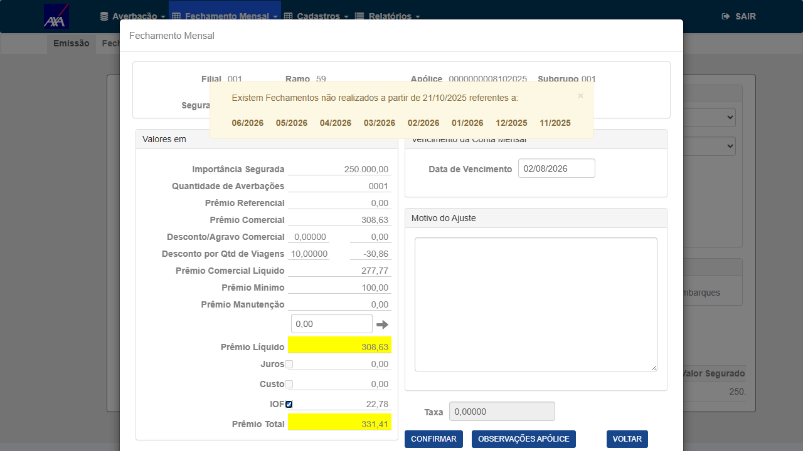

In scope: cálculo do Prêmio Líquido (e derivados Custo/IOF/Prêmio Total) no Fechamento Mensal de apólices RCV ramo 59 com Desconto por Qtd de Viagens, garantindo que o desconto é respeitado e que o valor não é sobrescrito ao interagir com campos da tela.
Out of scope: demais tipos de desconto/condição comercial não relacionados; outros ramos; correção retroativa de faturas já fechadas (ver CT-FMR-007 — decisão de negócio em aberto).
Ramo: 59 (RCV). Ambiente de execução (definição Wesley 28/07): executar em AXA (contexto original do fix) e KOVR (solicitado pela Fabiola). A TOKIO fica PENDENTE — será executada "quando liberado" (o fix específico da Tokio, TotPrTarfCos/RCV, foi revertido do #7884 — Diego 28/07; tratado à parte).
Reflexo nos relatórios (Fabiola): além do valor na tela/fatura, confirmar que o Prêmio Líquido correto (com o desconto) aparece gravado corretamente nos relatórios Resumo e Relação de Embarques — CT-FMR-009.
Grupo 1 — Prêmio Líquido com Desconto por Qtd de Viagens (núcleo do fix)
6▼Objetivo
Confirmar que, ao abrir a tela de Fechamento Mensal, o Prêmio Líquido já reflete o desconto (baseline correto).
Passos
- Login CITWEB HML AXA.
- Menu Nacional → Fechamento Mensal; localizar a apólice RCV (ramo 59) da massa.
- Abrir o fechamento da apólice e localizar o bloco de prêmio.
- Ler os campos: Prêmio Comercial, Desconto por Qtd de Viagens, Prêmio Comercial Líquido, Prêmio Líquido.
Resultado Esperado
Objetivo (núcleo do fix)
Reproduzir a ação que disparava o bug: focar/desfocar o campo Ajuste (ao lado da seta →, abaixo de "Prêmio Manutenção") sem alterar o conteúdo, e confirmar que o Prêmio Líquido permanece com o desconto.
Passos
- Com a tela aberta (valores corretos), clicar no campo Ajuste.
- Clicar em qualquer outro ponto da tela (perder o foco) — sem digitar nada.
- Reler o campo Prêmio Líquido.
Resultado Esperado


7884-CT002-FIX-premioliquido-preservado-555.png.Objetivo
Como Custo, IOF e Prêmio Total derivam do Prêmio Líquido, confirmar que não foram inflados pela interação.
Passos
- Após a interação do CT-FMR-002, ler Custo, IOF e Prêmio Total.
- Comparar com os valores baseline (derivados do Prêmio Líquido correto com desconto).
Resultado Esperado
Objetivo
Confirmar que o valor persistido (fatura/conta mensal) usa o Prêmio Líquido com desconto, não o inflado.
Passos
- Concluir o fechamento/emissão da apólice.
- Consultar a fatura/conta gerada (tela e/ou banco).
- Conferir o Prêmio Líquido e o Prêmio Total persistidos.
Resultado Esperado
Objetivo
O card cita "determinados campos" — cobrir campos além do Ajuste (ex.: Prêmio Manutenção e vizinhos), garantindo que a correção vale para as demais interações que disparavam o recálculo.
Passos
- Focar/desfocar cada campo editável do bloco de prêmio (sem alterar conteúdo).
- Após cada interação, reler o Prêmio Líquido.
Resultado Esperado
Objetivo (direcionamento Wesley 27/07)
Confirmar que o sistema enquadra a quantidade de embarques do mês na faixa correta e aplica o percentual de desconto correspondente sobre o Prêmio Comercial, refletindo no Prêmio Líquido.
Passos
- Consultar as faixas de desconto cadastradas na apólice (Condição Comercial / desconto por qtd de viagens).
- Para o mês de fechamento, verificar a quantidade de embarques/averbações da apólice.
- Simular/observar cenários que caiam em faixas distintas (ex.: uma qtd na faixa 0–100 → 5%; outra na faixa 101–300 → 7%) — via massa existente e/ou criando averbações que atinjam a faixa desejada (liberdade total HML).
- Em cada cenário, conferir o percentual de desconto aplicado e o Prêmio Líquido resultante.
Resultado Esperado
Grupo 2 — Regressão
1▼Objetivo
Garantir que o fix não alterou o comportamento de apólices sem desconto (onde Prêmio Líquido = Prêmio Comercial).
Passos
- Abrir o Fechamento Mensal de uma apólice RCV ramo 59 sem desconto por qtd de viagens.
- Ler o Prêmio Líquido; interagir com o campo Ajuste (sem digitar) e reler.
Resultado Esperado
Grupo 3 — Decisão de negócio (resolvida)
1▼Objetivo
Registrar a decisão de negócio (sem retroatividade). Não bloqueia nem compõe a homologação do fix.
Resultado Esperado
Grupo 4 — Reflexo nos relatórios de embarques (direção Fabiola/Wesley 28/07)
1▼Objetivo (direção Fabiola/Wesley 28/07)
Confirmar que o Prêmio Líquido corrigido (com o desconto) aparece gravado corretamente nos relatórios Resumo de Embarques e Relação de Embarques — não só na tela/fatura.
Passos
- Após o fechamento da apólice (Prêmio Líquido correto), gerar o relatório Relação de Embarques (e Resumo de Embarques) do período.
- Localizar a apólice/embarque no relatório e ler o valor de Prêmio Líquido gravado.
- Comparar com o valor esperado (com desconto) da tela/fatura.
- Repetir em TOKIO e KOVR.
Resultado Esperado
| Critério de aceite | CT(s) |
|---|---|
| Prêmio Líquido reflete o Desconto por Qtd de Viagens ao abrir | CT-FMR-001 |
| Prêmio Líquido não é sobrescrito ao interagir com o campo Ajuste | CT-FMR-002 |
| Custo/IOF/Prêmio Total (derivados) permanecem corretos | CT-FMR-003 |
| Valor persistido (fatura) usa o Prêmio Líquido com desconto | CT-FMR-004 |
| Correção vale para demais campos que disparavam o recálculo | CT-FMR-005 |
| Enquadramento correto nas faixas de desconto por qtd de viagens | CT-FMR-008 |
| Apólices sem desconto inalteradas (regressão) | CT-FMR-006 |
| Faturas já fechadas — SEM correção retroativa (decidido por Wesley 27/07) | CT-FMR-007 (fora do fix, sem ação) |
| Prêmio Líquido correto reflete nos relatórios Resumo/Relação de Embarques (TOKIO/KOVR) — direção Fabiola/Wesley 28/07 | CT-FMR-009 |
- Impacto financeiro direto (Alto): valor inflado vai para a cobrança do segurado. Mitigação: CT-FMR-002/003/004 validam cálculo + persistência.
- Recálculo disparado por vários campos (Médio): o card cita "determinados campos"; o fix pode cobrir só alguns. Mitigação: CT-FMR-005 varre os campos do bloco.
- Faturas já fechadas com valor errado (Médio/negócio): retroatividade não coberta pelo fix. Mitigação: CT-FMR-007 escala a decisão a Produtos.
- Massa específica (Baixo): depende de apólice RCV 59 com desconto por qtd de viagens. Mitigação: localizar via Relação de Apólices/banco ou criar via UI (HML liberdade total).